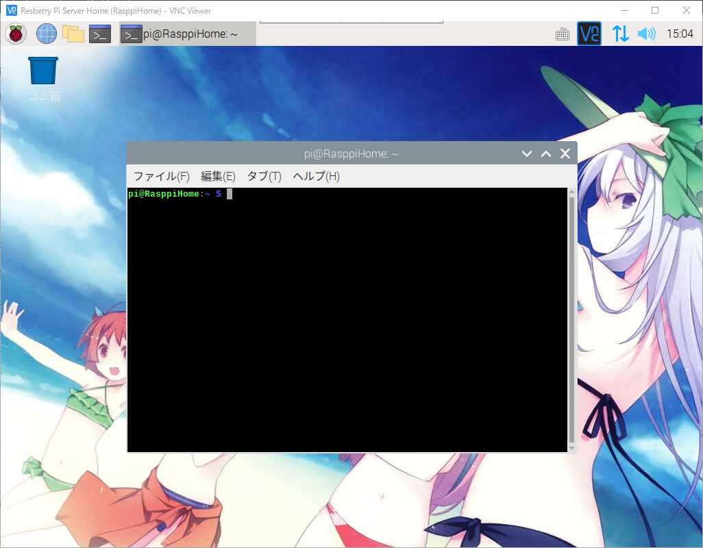
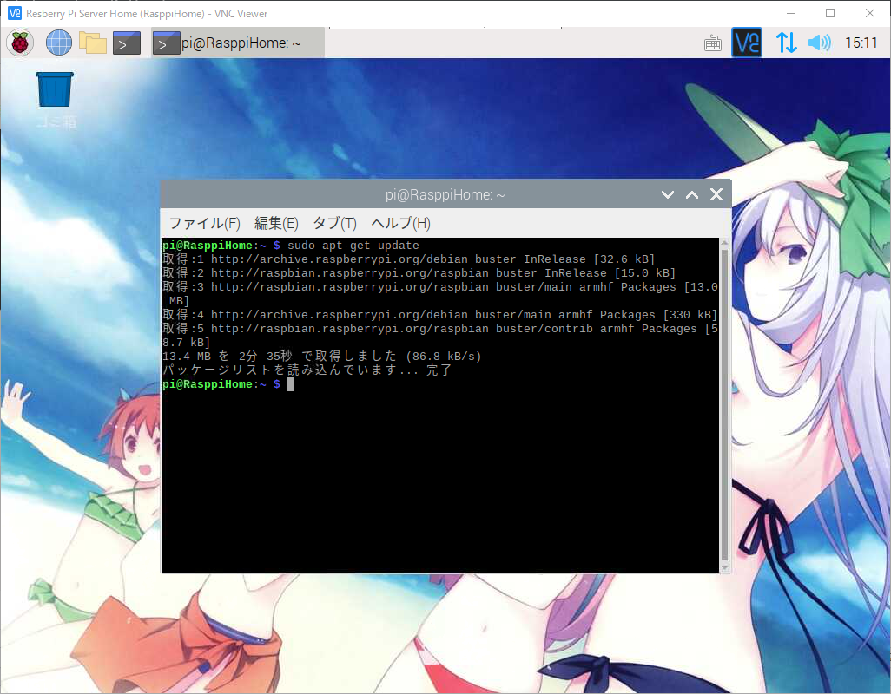
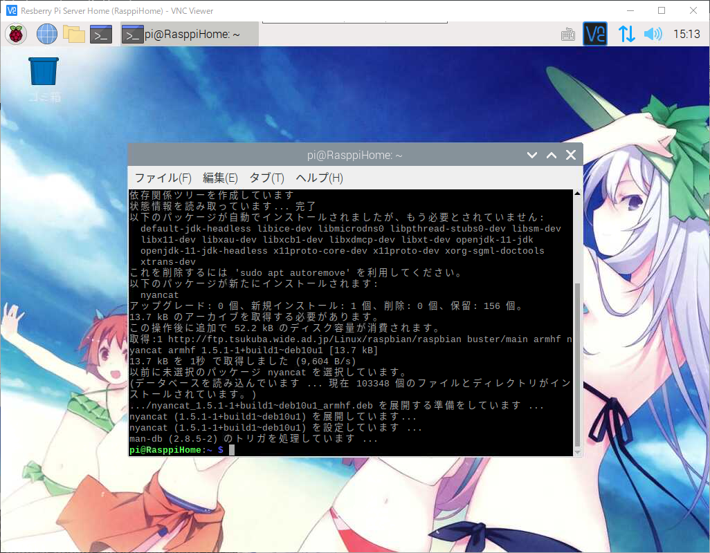
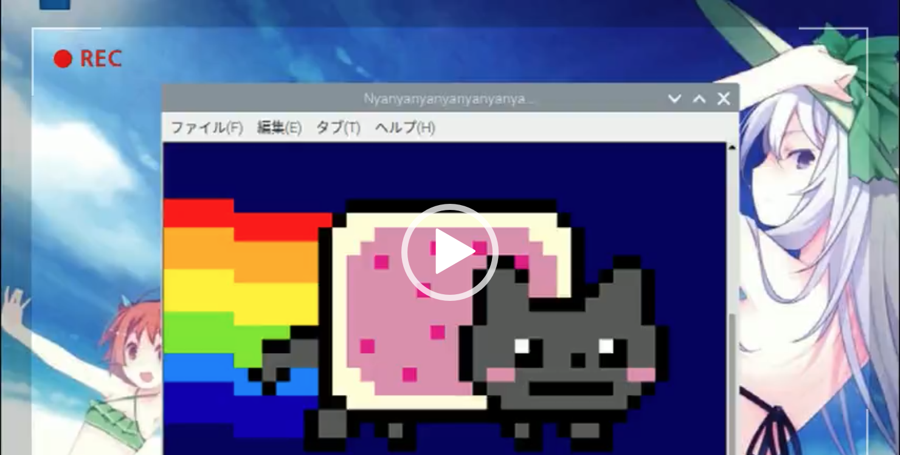

<!DOCTYPE html>
<html lang="ko">
    
<head>
    <meta charset="UTF-8">
    <meta name="viewport" content="width=device-width, initial-scale=1">
    <meta name="generator" content="아키하바라와 개발정보를 공유하는 블로그 입니다.">
    <title>라즈베리파이에서 Nyan Cat 테마 설치후 사용하기 - 아키하바라와 개발정보를 공유하는 블로그 입니다.</title>
    <meta name="author" content="Playneko">
    
        <meta name="keywords" content="linux,Linux 명령줄,Nyan Cat,nyancat,Rasberry Pi,root,zero,ラズベリーパイ,고양이,라이선스,라즈베리파이,무지개,오픈소스,테마">
    
    
    
        
            <link rel="alternate" type="application/rss+xml" title="RSS" href="/rss2.xml">
        
    
    <script type="application/ld+json">{"@context":"http://schema.org","@type":"BlogPosting","author":{"@type":"Person","name":"Playneko","sameAs":["https://github.com/playneko"],"image":"image.png"},"articleBody":"\n라즈베리파이에서 Nyan Cat 테마 설치후 사용하기안녕하세요. AkibaTV입니다.\n이번에 소개할 내용은 라즈베리파이에서 Nyan Cat 테마 설치후 사용하기 입니다.\nNyan Cat이란 오픈소스 라이선스 프로그램으로\n라즈베리파이 또는 리눅스의 터미널상에서 명령어 한번으로 간단하게 재밌는 테마를 감상 하실수 있습니다.\n그럼 어떻게 설치하고 실행해 보는지 해보도록 하겠습니다.\n라즈베리파이를 VNC로 접속하시고 터미널을 실행해 주시기 바랍니다.\n\n그리고 아래의 명령어를 차례대로 입력하시기 바랍니다.\n1234# 패키지 리스트 최신 업데이트$ sudo apt-get update# Nyan Cat 설치하기$ sudo apt-get install nyancat\n\n\n위와같이 나오게 되시면 모든 설치가 완료가 된것 입니다.\n이제 Nyan Cat을 실행을 해보도록 하겠습니다.\n아래와 같이 명령어를 입력해 주시기 바랍니다.\n12# Nyan Cat 실행 명령어pi@Rasppi$ nyancat\n명령어는 어디에서든 상관없이 입력해 주시면 실행이 됩니다.\n\n\b실행 영상\n실행후 종료를 하시려면 아래의 명령어를 입력해 주세요.\n12# 컨트롤 + C키를 눌러주시면 Nyan Cat이 종료 됩니다.Ctrl + C\n지루하게 느껴질수 있는 터미널에서 잠시 테마를 실행후 보시거나\n자리를 비우실 경우에 화면보호기용으로 실행을 해주셔도 좋습니다.","dateCreated":"2020-09-14T01:00:00+09:00","dateModified":"2020-12-26T20:01:14+09:00","datePublished":"2020-09-14T01:00:00+09:00","description":"\n라즈베리파이에서 Nyan Cat 테마 설치후 사용하기이번에 소개할 내용은 라즈베리파이에서 Nyan Cat 테마 설치후 사용하기 입니다.","headline":"라즈베리파이에서 Nyan Cat 테마 설치후 사용하기","image":["000.png"],"mainEntityOfPage":{"@type":"WebPage","@id":"https://playneko.github.io/2020/09/14/rasberry-pi/rasberry-pi-048/"},"publisher":{"@type":"Organization","name":"Playneko","sameAs":["https://github.com/playneko"],"image":"image.png","logo":{"@type":"ImageObject","url":"image.png"}},"url":"https://playneko.github.io/2020/09/14/rasberry-pi/rasberry-pi-048/","keywords":"Rasberry Pi, ラズベリーパイ, 라즈베리파이, linux, root, zero, 오픈소스, Linux 명령줄, Nyan Cat, nyancat, 고양이, 라이선스, 무지개, 테마","thumbnailUrl":"000.png"}</script>
    <meta name="description" content="라즈베리파이에서 Nyan Cat 테마 설치후 사용하기이번에 소개할 내용은 라즈베리파이에서 Nyan Cat 테마 설치후 사용하기 입니다.">
<meta property="og:type" content="blog">
<meta property="og:title" content="라즈베리파이에서 Nyan Cat 테마 설치후 사용하기">
<meta property="og:url" content="https://playneko.github.io/2020/09/14/rasberry-pi/rasberry-pi-048/index.html">
<meta property="og:site_name" content="아키하바라와 개발정보를 공유하는 블로그 입니다.">
<meta property="og:description" content="라즈베리파이에서 Nyan Cat 테마 설치후 사용하기이번에 소개할 내용은 라즈베리파이에서 Nyan Cat 테마 설치후 사용하기 입니다.">
<meta property="og:locale" content="ko_KR">
<meta property="og:image" content="https://playneko.github.io/2020/09/14/rasberry-pi/rasberry-pi-048/001.png">
<meta property="og:image" content="https://playneko.github.io/2020/09/14/rasberry-pi/rasberry-pi-048/002.png">
<meta property="og:image" content="https://playneko.github.io/2020/09/14/rasberry-pi/rasberry-pi-048/003.png">
<meta property="og:image" content="https://playneko.github.io/2020/09/14/rasberry-pi/rasberry-pi-048/004.png">
<meta property="og:image" content="https://playneko.github.io/2020/09/14/rasberry-pi/rasberry-pi-048/005.png">
<meta property="article:published_time" content="2020-09-13T16:00:00.000Z">
<meta property="article:modified_time" content="2020-12-26T11:01:14.789Z">
<meta property="article:author" content="Playneko">
<meta property="article:tag" content="Rasberry Pi">
<meta property="article:tag" content="ラズベリーパイ">
<meta property="article:tag" content="라즈베리파이">
<meta property="article:tag" content="linux">
<meta property="article:tag" content="root">
<meta property="article:tag" content="zero">
<meta property="article:tag" content="오픈소스">
<meta property="article:tag" content="Linux 명령줄">
<meta property="article:tag" content="Nyan Cat">
<meta property="article:tag" content="nyancat">
<meta property="article:tag" content="고양이">
<meta property="article:tag" content="라이선스">
<meta property="article:tag" content="무지개">
<meta property="article:tag" content="테마">
<meta name="twitter:card" content="summary">
<meta name="twitter:image" content="https://playneko.github.io/2020/09/14/rasberry-pi/rasberry-pi-048/001.png">
    
    
        
    
    
        <meta property="og:image" content="https://playneko.github.io/assets/images/image.png">
    
    
        <meta property="og:image" content="https://playneko.github.io/2020/09/14/rasberry-pi/rasberry-pi-048/000.png">
        <meta class="swiftype" name="image" data-type="enum" content="https://playneko.github.io/2020/09/14/rasberry-pi/rasberry-pi-048/000.png">
    
    
    
    <!--STYLES-->
    
<link rel="stylesheet" href="/assets/css/style-lzdpinkjkfznsdiewiiijzmxokzrox4doj5jzhb6hid0rnf6y9ru29jnd5cl.min.css">

    <!--STYLES END-->
    

    

    
        
    
</head>

    <body>
        <div id="blog">
            <!-- Define author's picture -->


    
        
            
        
    

<header id="header" data-behavior="4">
    <i id="btn-open-sidebar" class="fa fa-lg fa-bars"></i>
    <div class="header-title">
        <a class="header-title-link" href="/" aria-label>
            아키하바라와 개발정보를 공유하는 블로그 입니다.
        </a>
    </div>
    
        
            <a class="header-right-picture " href="#about" aria-label="링크 열기: /#about">
        
        
            
        
        </a>
    
</header>

            <!-- Define author's picture -->


        
    

<nav id="sidebar" data-behavior="4">
    <div class="sidebar-container">
        
            <div class="sidebar-profile">
                <a href="/#about" aria-label="저자에 대해 더 알아보기">
                    
                </a>
                <h4 class="sidebar-profile-name">Playneko</h4>
                
                    <h5 class="sidebar-profile-bio"><p>아키하바라와 개발정보를 공유하는 블로그 입니다.</p>
</h5>
                
            </div>
        
        
            <ul class="sidebar-buttons">
            
                <li class="sidebar-button">
                    
                        <a class="sidebar-button-link " href="/" rel="noopener" title="Home">
                        <i class="sidebar-button-icon fa fa-home" aria-hidden="true"></i>
                        <span class="sidebar-button-desc">Home</span>
                    </a>
            </li>
            
                <li class="sidebar-button">
                    
                        <a class="sidebar-button-link " href="/all-categories" rel="noopener" title="카테고리">
                        <i class="sidebar-button-icon fa fa-bookmark" aria-hidden="true"></i>
                        <span class="sidebar-button-desc">카테고리</span>
                    </a>
            </li>
            
                <li class="sidebar-button">
                    
                        <a class="sidebar-button-link " href="/all-tags" rel="noopener" title="태그">
                        <i class="sidebar-button-icon fa fa-tags" aria-hidden="true"></i>
                        <span class="sidebar-button-desc">태그</span>
                    </a>
            </li>
            
                <li class="sidebar-button">
                    
                        <a class="sidebar-button-link " href="/all-archives" rel="noopener" title="아카이브">
                        <i class="sidebar-button-icon fa fa-archive" aria-hidden="true"></i>
                        <span class="sidebar-button-desc">아카이브</span>
                    </a>
            </li>
            
                <li class="sidebar-button">
                    
                        <a class="sidebar-button-link open-algolia-search" href="#search" rel="noopener" title="검색">
                        <i class="sidebar-button-icon fa fa-search" aria-hidden="true"></i>
                        <span class="sidebar-button-desc">검색</span>
                    </a>
            </li>
            
                <li class="sidebar-button">
                    
                        <a class="sidebar-button-link " href="#about" rel="noopener" title="About">
                        <i class="sidebar-button-icon fa fa-question" aria-hidden="true"></i>
                        <span class="sidebar-button-desc">About</span>
                    </a>
            </li>
            
        </ul>
        
            <ul class="sidebar-buttons">
            
                <li class="sidebar-button">
                    
                        <a class="sidebar-button-link " href="https://github.com/playneko" target="_blank" rel="external nofollow noopener noreferrer" title="GitHub">
                        <i class="sidebar-button-icon fab fa-github" aria-hidden="true"></i>
                        <span class="sidebar-button-desc">GitHub</span>
                    </a>
            </li>
            
        </ul>
        
            <ul class="sidebar-buttons">
            
                <li class="sidebar-button">
                    
                        <a class="sidebar-button-link " href="/atom.xml" rel="noopener" title="RSS">
                        <i class="sidebar-button-icon fa fa-rss" aria-hidden="true"></i>
                        <span class="sidebar-button-desc">RSS</span>
                    </a>
            </li>
            
        </ul>
        
    </div>
</nav>

            
            <div id="main" data-behavior="4" class="
                        hasCoverMetaIn
                        ">
                
<article class="post">
    
    
        <div class="post-header main-content-wrap text-center">
    
        <h1 class="post-title">
            라즈베리파이에서 Nyan Cat 테마 설치후 사용하기
        </h1>
    
    
        <div class="post-meta">
    <time datetime="2020-09-14T01:00:00+09:00">
	
		    2020/09/14 01:00
    	
    </time>
    
        <span>카테고리 </span>
        
    <a class="category-link" href="/categories/Rasberry-Pi/">Rasberry Pi</a>, <a class="category-link" href="/categories/Rasberry-Pi/Linux/">Linux</a>


    
</div>

    
</div>

    
    <div class="post-content markdown">
        <div class="main-content-wrap">
            <script async src="//pagead2.googlesyndication.com/pagead/js/adsbygoogle.js"></script>
<!-- 광고 -->
<ins class="adsbygoogle" style="display:block" data-ad-client="ca-pub-6351488118670184" data-ad-slot="6351488118670184" data-ad-format="auto"></ins>
<script>
(adsbygoogle = window.adsbygoogle || []).push({});
</script>

            <!-- excerpt -->
<h2 id="라즈베리파이에서-Nyan-Cat-테마-설치후-사용하기"><a href="#라즈베리파이에서-Nyan-Cat-테마-설치후-사용하기" class="headerlink" title="라즈베리파이에서 Nyan Cat 테마 설치후 사용하기"></a>라즈베리파이에서 Nyan Cat 테마 설치후 사용하기</h2><p>안녕하세요. AkibaTV입니다.</p>
<p>이번에 소개할 내용은 라즈베리파이에서 Nyan Cat 테마 설치후 사용하기 입니다.</p>
<p>Nyan Cat이란 오픈소스 라이선스 프로그램으로</p>
<p>라즈베리파이 또는 리눅스의 터미널상에서 명령어 한번으로 간단하게 재밌는 테마를 감상 하실수 있습니다.</p>
<p>그럼 어떻게 설치하고 실행해 보는지 해보도록 하겠습니다.</p>
<p>라즈베리파이를 VNC로 접속하시고 터미널을 실행해 주시기 바랍니다.</p>
<p></p>
<p>그리고 아래의 명령어를 차례대로 입력하시기 바랍니다.</p>
<figure class="highlight bash"><table><tr><td class="gutter"><pre><span class="line">1</span><br><span class="line">2</span><br><span class="line">3</span><br><span class="line">4</span><br></pre></td><td class="code"><pre><span class="line"><span class="comment"># 패키지 리스트 최신 업데이트</span></span><br><span class="line">$ sudo apt-get update</span><br><span class="line"><span class="comment"># Nyan Cat 설치하기</span></span><br><span class="line">$ sudo apt-get install nyancat</span><br></pre></td></tr></table></figure>
<p></p>
<p></p>
<p>위와같이 나오게 되시면 모든 설치가 완료가 된것 입니다.</p>
<p>이제 Nyan Cat을 실행을 해보도록 하겠습니다.</p>
<p>아래와 같이 명령어를 입력해 주시기 바랍니다.</p>
<figure class="highlight bash"><table><tr><td class="gutter"><pre><span class="line">1</span><br><span class="line">2</span><br></pre></td><td class="code"><pre><span class="line"><span class="comment"># Nyan Cat 실행 명령어</span></span><br><span class="line">pi@Rasppi$ nyancat</span><br></pre></td></tr></table></figure>
<p>명령어는 어디에서든 상관없이 입력해 주시면 실행이 됩니다.</p>
<p></p>
<p><br><a target="_blank" rel="external nofollow noopener noreferrer" href="https://playneko.com/wp-content/uploads/2020/09/005.mp4">실행 영상</a></p>
<p>실행후 종료를 하시려면 아래의 명령어를 입력해 주세요.</p>
<figure class="highlight bash"><table><tr><td class="gutter"><pre><span class="line">1</span><br><span class="line">2</span><br></pre></td><td class="code"><pre><span class="line"><span class="comment"># 컨트롤 + C키를 눌러주시면 Nyan Cat이 종료 됩니다.</span></span><br><span class="line">Ctrl + C</span><br></pre></td></tr></table></figure>
<p>지루하게 느껴질수 있는 터미널에서 잠시 테마를 실행후 보시거나</p>
<p>자리를 비우실 경우에 화면보호기용으로 실행을 해주셔도 좋습니다.</p>
            


            <script async src="//pagead2.googlesyndication.com/pagead/js/adsbygoogle.js"></script>
<!-- 광고 -->
<ins class="adsbygoogle" style="display:block" data-ad-client="ca-pub-6351488118670184" data-ad-slot="6351488118670184" data-ad-format="auto"></ins>
<script>
(adsbygoogle = window.adsbygoogle || []).push({});
</script>

        </div>
    </div>
    <div id="post-footer" class="post-footer main-content-wrap">
        
            <div class="post-footer-tags">
                <span class="text-color-light text-small">태그</span><br>
                
    <a class="tag tag--primary tag--small t-none-link" href="/tags/Linux-%EB%AA%85%EB%A0%B9%EC%A4%84/" rel="tag">Linux 명령줄</a> <a class="tag tag--primary tag--small t-none-link" href="/tags/Nyan-Cat/" rel="tag">Nyan Cat</a> <a class="tag tag--primary tag--small t-none-link" href="/tags/Rasberry-Pi/" rel="tag">Rasberry Pi</a> <a class="tag tag--primary tag--small t-none-link" href="/tags/linux/" rel="tag">linux</a> <a class="tag tag--primary tag--small t-none-link" href="/tags/nyancat/" rel="tag">nyancat</a> <a class="tag tag--primary tag--small t-none-link" href="/tags/root/" rel="tag">root</a> <a class="tag tag--primary tag--small t-none-link" href="/tags/zero/" rel="tag">zero</a> <a class="tag tag--primary tag--small t-none-link" href="/tags/%E3%83%A9%E3%82%BA%E3%83%99%E3%83%AA%E3%83%BC%E3%83%91%E3%82%A4/" rel="tag">ラズベリーパイ</a> <a class="tag tag--primary tag--small t-none-link" href="/tags/%EA%B3%A0%EC%96%91%EC%9D%B4/" rel="tag">고양이</a> <a class="tag tag--primary tag--small t-none-link" href="/tags/%EB%9D%BC%EC%9D%B4%EC%84%A0%EC%8A%A4/" rel="tag">라이선스</a> <a class="tag tag--primary tag--small t-none-link" href="/tags/%EB%9D%BC%EC%A6%88%EB%B2%A0%EB%A6%AC%ED%8C%8C%EC%9D%B4/" rel="tag">라즈베리파이</a> <a class="tag tag--primary tag--small t-none-link" href="/tags/%EB%AC%B4%EC%A7%80%EA%B0%9C/" rel="tag">무지개</a> <a class="tag tag--primary tag--small t-none-link" href="/tags/%EC%98%A4%ED%94%88%EC%86%8C%EC%8A%A4/" rel="tag">오픈소스</a> <a class="tag tag--primary tag--small t-none-link" href="/tags/%ED%85%8C%EB%A7%88/" rel="tag">테마</a>

            </div>
        
        
        
            
                <div id="disqus_thread">
    <noscript>Please enable JavaScript to view the <a target="_blank" rel="noopener" href="//disqus.com/?ref_noscript">comments powered by Disqus.</a></noscript>
</div>
            
        
    </div>
</article>


                <footer id="footer" class="main-content-wrap">
    <span class="copyrights">
        Copyrights &copy; 2020 Playneko. All Rights Reserved.
    </span>
</footer>

            </div>
            
        </div>
        


    
        
    

<div id="about">
    <div id="about-card">
        <div id="about-btn-close">
            <i class="fa fa-times"></i>
        </div>
        
            
        
            <h4 id="about-card-name">Playneko</h4>
        
            <div id="about-card-bio"><p>아키하바라와 개발정보를 공유하는 블로그 입니다.</p>
</div>
        
        
            <div id="about-card-job">
                <i class="fa fa-briefcase"></i>
                <br>
                <p>프리랜서</p>

            </div>
        
        
            <div id="about-card-location">
                <i class="fa fa-map-marker-alt"></i>
                <br>
                Japan, Tokyo
            </div>
        
    </div>
</div>

        
        
<div id="cover" style="background-image:url('/assets/images/cover.jpg');"></div>
        <!--SCRIPTS-->

<script src="/assets/js/script-gm8gmbvk80lparwvaqm5rrecxme2iweqt0kvzbyivftosf08ty8uikvymzgo.min.js"></script>

<!--SCRIPTS END-->


    
        <script>
          var disqus_config = function() {
            this.page.url = 'https://playneko.github.io/2020/09/14/rasberry-pi/rasberry-pi-048/';
              
            this.page.identifier = '2020/09/14/rasberry-pi/rasberry-pi-048/';
              
          };
          (function() {
            var d = document, s = d.createElement('script');
            var disqus_shortname = 'playneko-github-io';
            s.src = '//' + disqus_shortname + '.disqus.com/embed.js';

            s.setAttribute('data-timestamp', +new Date());
            (d.head || d.body).appendChild(s);
          })();
        </script>
    


    </body>
</html>
